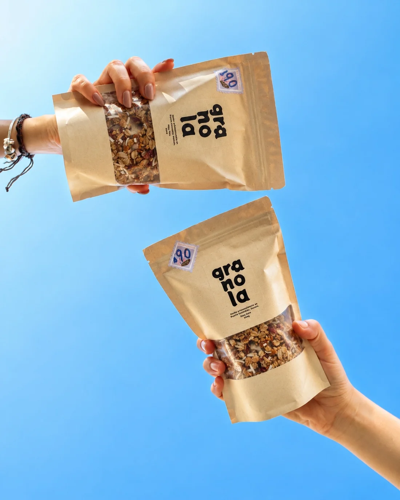
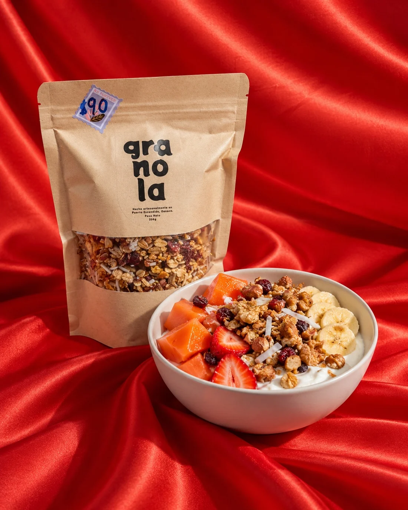
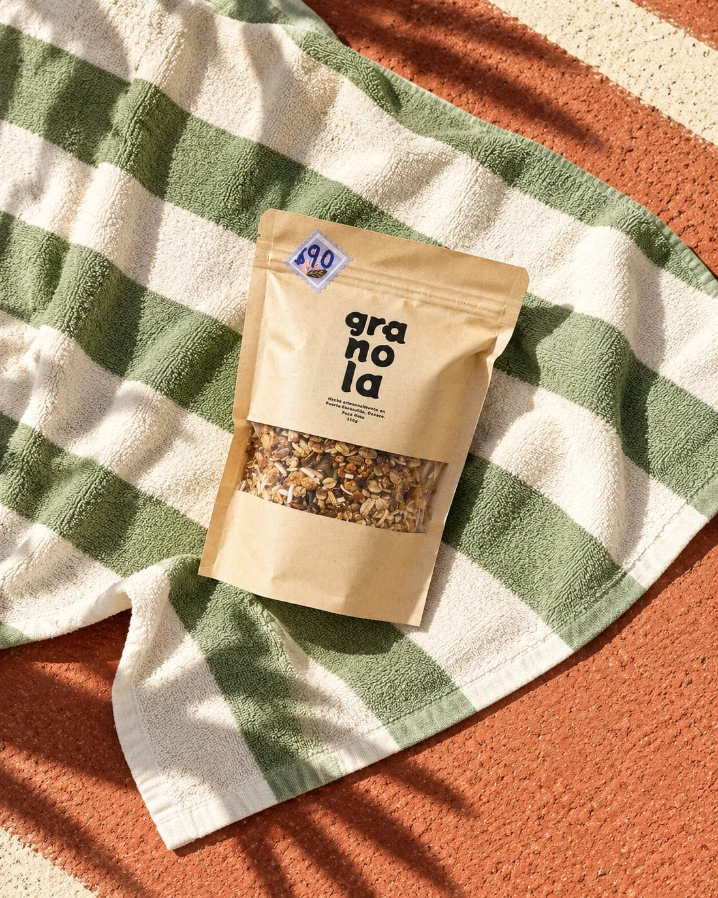
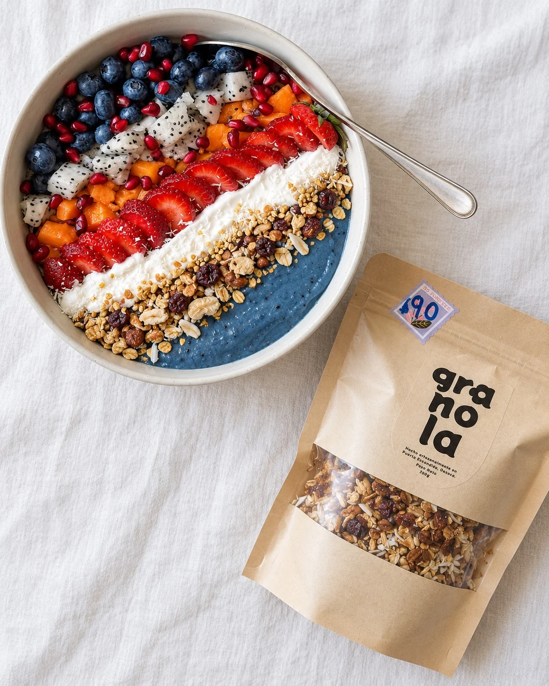
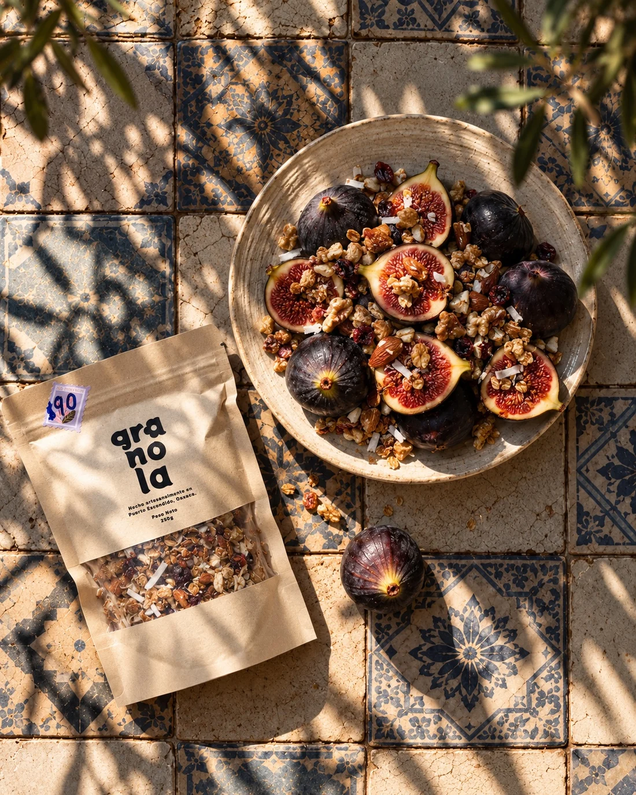
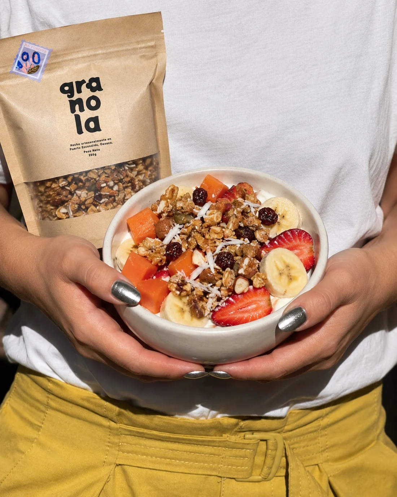
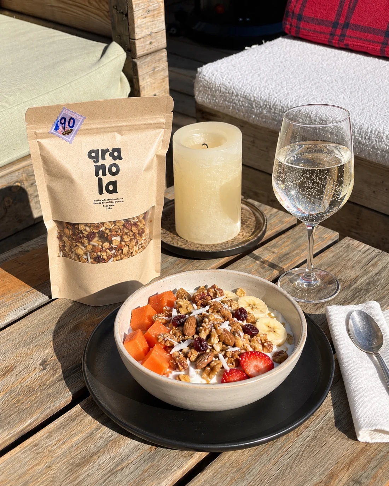
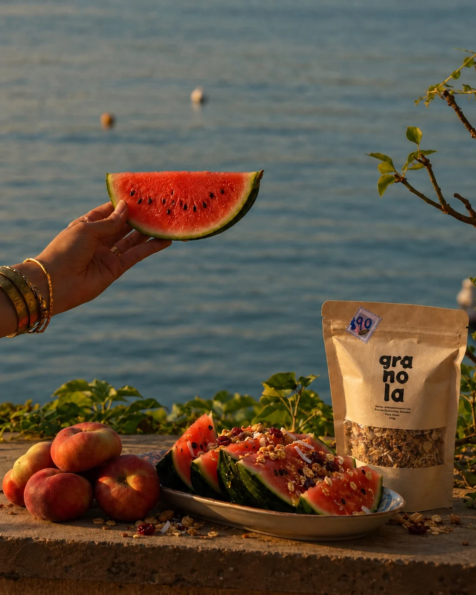
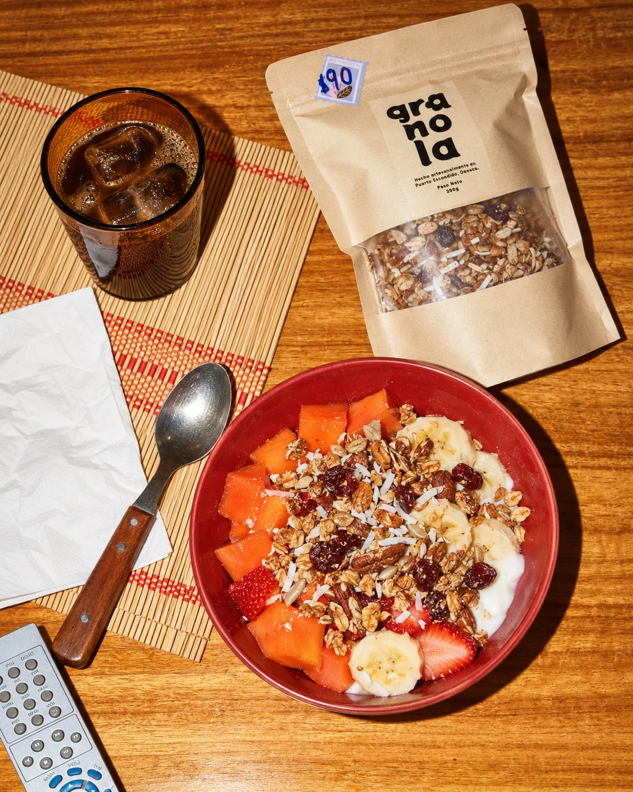

LAS BUENAS
MAÑANAS
SE HACEN
CON GRANOLA.
Granola artesanal, hecha en pequeños lotes por una sola persona. Ingredientes ricos, textura crujiente y un poquito de Puerto en cada cucharada.

UN POQUITO
DE FELICIDAD
EN UNA BOLSA.
No necesitamos veinte productos. Tenemos una obsesión: hacer granola rica para los desayunos que se alargan y las mañanas que empiezan temprano.

CRUNCH DEL BUENOGRANOLA
artesanal
Una bolsa. Mil buenas ideas.
Hecha en Puerto Escondido, en pequeños lotes y con ingredientes seleccionados. Rica con yogurt, fruta, smoothies… o directo de la bolsa, no juzgamos.
Elige la cantidad y prepara tu pedido. Precio, disponibilidad y entrega se confirman con la productora.

NO ES DE
FÁBRICA.
ES DE CORAZÓN.
Detrás de esta bolsa hay una chica que hace granola artesanal en Puerto Escondido. Ella elige, mezcla y prepara cada lote con calma y mucho cuidado.
Nos gustan las cosas simples, los ingredientes que puedes reconocer y los desayunos que saben a un día bonito.

BOWLS BONITOS
INGREDIENTES REALES
MAÑANAS FELICES
BUENOS CAFÉS · BUENOS BOWLS · BUENA GRANOLA¿TIENES
UN CAFÉ?
HAGAMOS MATCH.
Si tienes una cafetería, restaurante, hospedaje o haces desayunos en Zicatela y Puerto Escondido, nos encantaría que nuestra granola esté en tu menú.
PARA CADA
ANTOJO.
En el bowl, con fruta, en un desayuno lento o como snack. No hay instrucciones, solo ganas.


BUENOS DÍAS,
BUENA GRANOLA.
Hecha artesanalmente en Puerto Escondido, Oaxaca. Para tu casa, para tu café, para compartir.